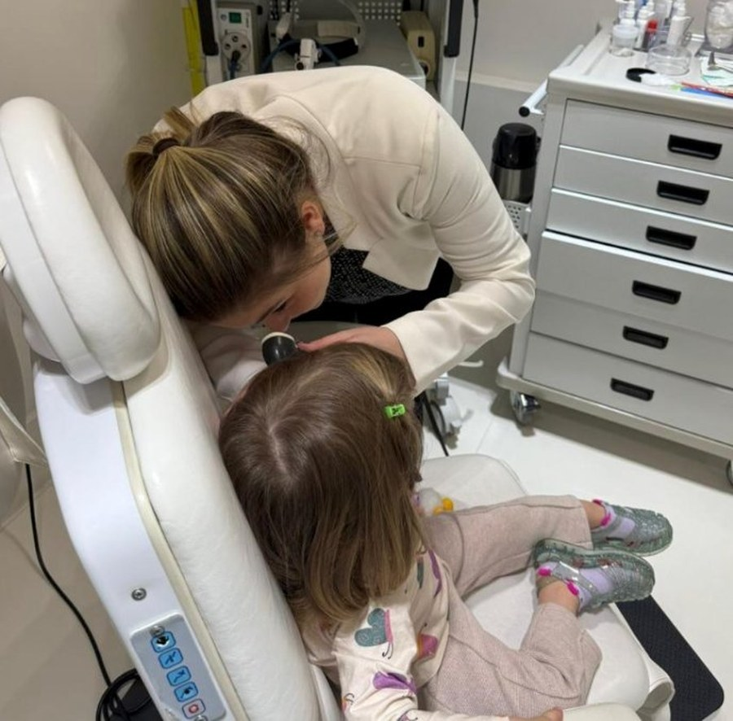
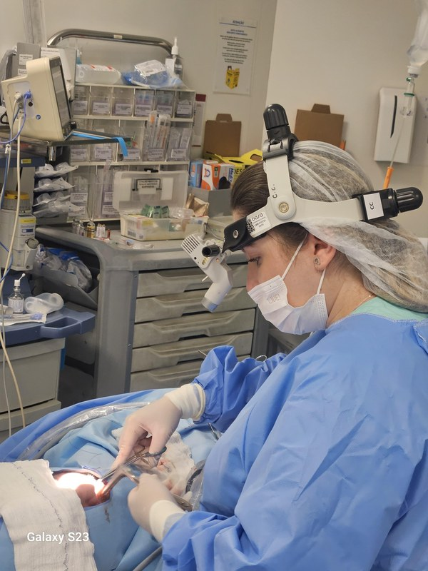

Dra. Giuliana Graicer é otorrinolaringologista graduada pela PUC-SP, com residência no HC-USP, Hospital das Clínicas da Faculdade de Medicina da USP, maior referência nacional, e fellowship concluído em 2024 no Massachusetts Eye and Ear, vinculado à Harvard Medical School.
Atende adultos e crianças, com expertise em clínica e cirurgia ORL. O que define seu atendimento não é só a formação: é a forma como conduz cada caso, com investigação real e tempo para ouvir antes de concluir.
O que chega como rinite pode ser septo desviado. O que chega como ronco pode ser apneia com risco cardiovascular real. A Dra. Giuliana trabalha para encontrar a causa, não apenas controlar o sintoma.
A consulta começa pela escuta, histórico clínico completo, não só a queixa principal.
Começa pela história, há quanto tempo, o que já foi feito, o que piorou, o que nunca foi investigado.
Nasofibrolaringoscopia e videolaringoscopia realizadas ali mesmo. Você visualiza as vias aéreas em tempo real.
Canal auditivo e tímpano projetados em tela, tudo visível para você em tempo real.
Ao final você sabe o que foi encontrado e qual é o caminho, clínico ou cirúrgico. Sem termos vagos.
Formação cirúrgica de alto nível, mas a cirurgia é a última escolha fundamentada. Quando indicada, o paciente entende por quê.


Agende sua consulta com a Dra. Giuliana Graicer, médica otorrinolaringologista em São Paulo no Bairro Jardins próximo a Av. Paulista, e saia da primeira consulta já sabendo o que está acontecendo.
Agendar minha consulta